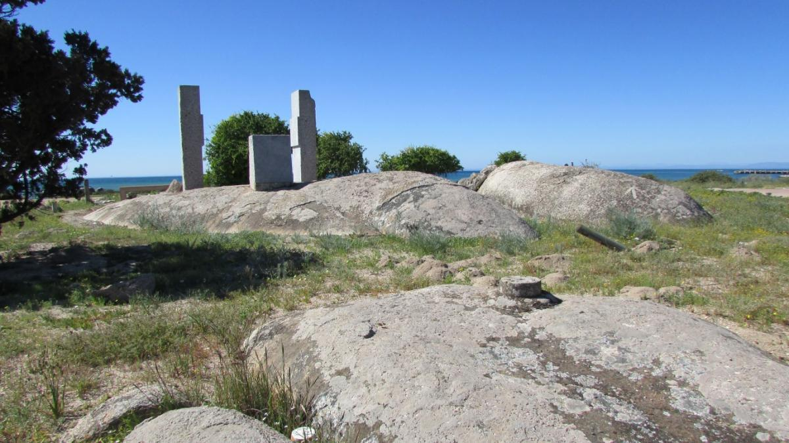

1497 The Bay of St. Helena [on the west coast of the present country
of South Africa]. On Tuesday (November 7) we returned to the land,
which we found to be low, with a broad bay opening into it. The
captain-major [i.e., da Gama speaking in the third person] sent Pero
d'Alenquer in a boat to take soundings and to search for good
anchoring ground. The bay was found to be very clean, and to afford
shelter against all winds except those from the N.W. It extended
east and west, and we named it Santa Helena.

On Wednesday (November 8) we cast anchor in this bay, and we
remained there eight days, cleaning the ships, mending the sails,
and taking in wood. The river Samtiagua (S. Thiago) enters the bay
four leagues to the S.E. of the anchorage. It comes from the
interior (sertao), is about a stone's throw across at the mouth, and
from two to three fathoms in depth at all states of the tide. The
inhabitants of this country are tawny-colored. Their food is
confined to the flesh of seals, whales and gazelles, and the roots
of herbs. They are dressed in skins, and wear sheaths over their
virile members. They are armed with poles of olive wood to which a
horn, browned in the fire, is attached.
Their numerous dogs resemble those of Portugal, and bark like
them. The birds of the country, likewise, are the same as in
Portugal, and include cormorants, gulls, turtle doves,
crested larks, and many others.
The climate is healthy and temperate, and produces good
herbage. On the day after we had cast anchor, that is to say on Thursday
(November 9), we landed with the captain-major, and took
captive one of the natives, who was small of stature
like Sancho Mexia. This man had been gathering honey in the sandy waste, for in this
country the bees deposit their honey at the foot of the mounds
around the bushes. He was taken on board the captain-major's ship,
and being placed at the table, he ate of all we ate. On the
following day the captain-major had him well dressed and sent
ashore.